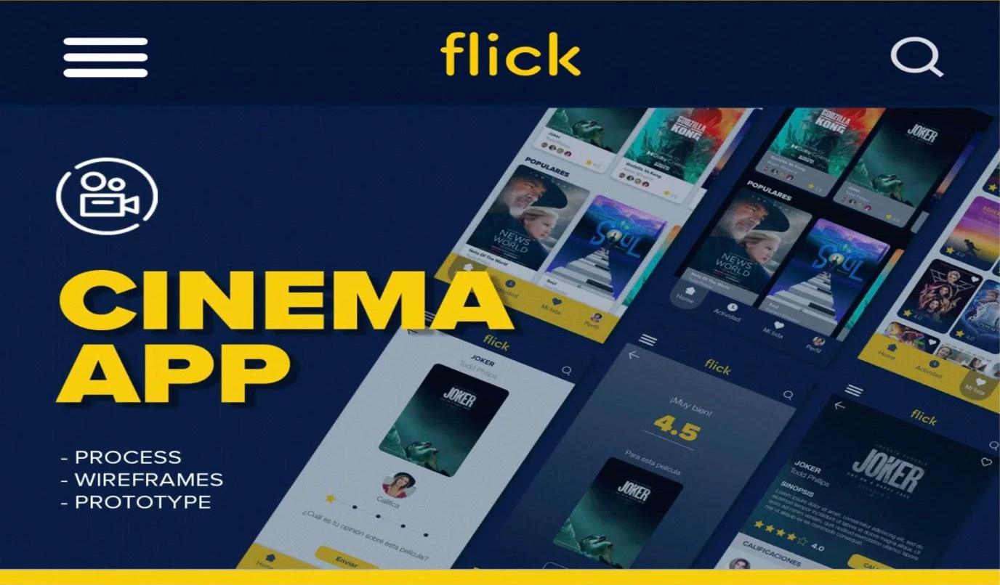
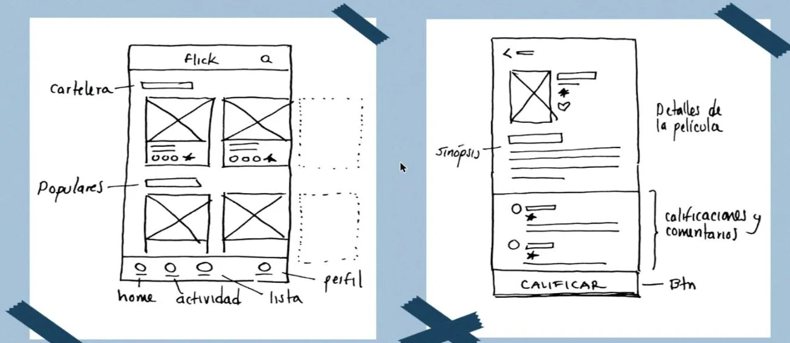
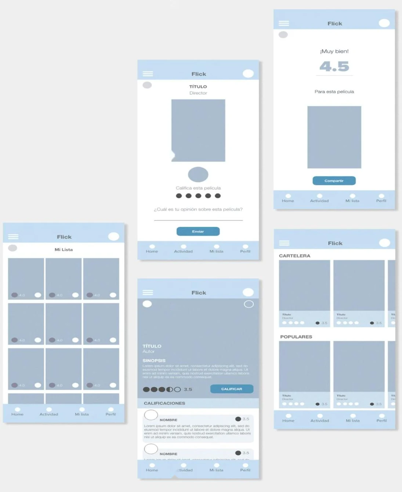
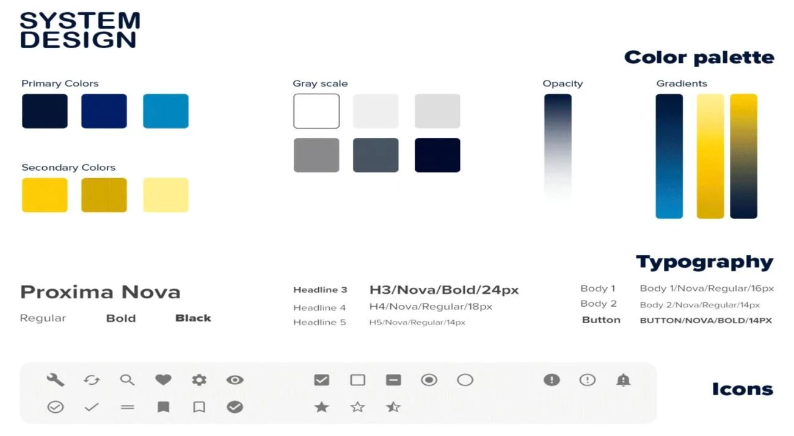
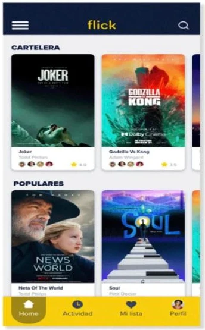
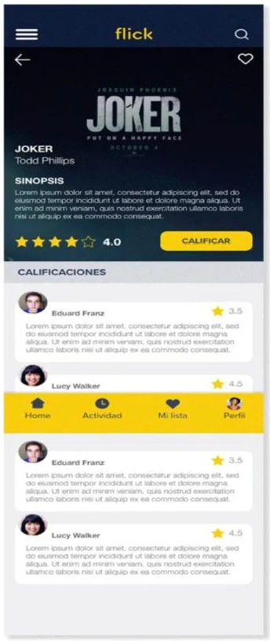
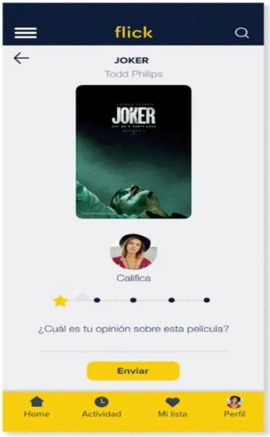
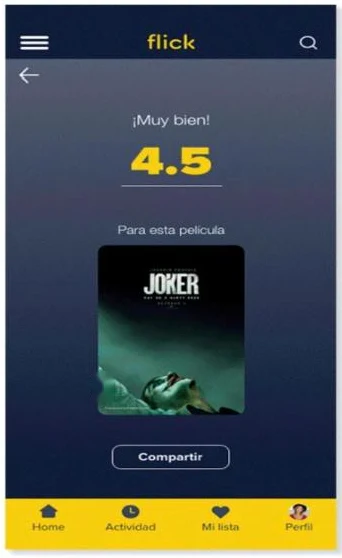
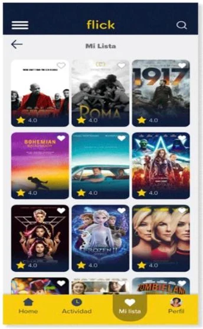

Un concepto de app de cine para explorar la cartelera, elegir qué ver y calificar películas, diseñado desde la arquitectura de información hasta un sistema de diseño y un prototipo.

Una interfaz simple, amable y fácil de usar, que muestre la información de forma ordenada y centrada en las preferencias del usuario.
Cartelera, populares, mi lista y perfil, con una barra inferior fija de cuatro destinos.
Una paleta azul marino y amarillo, tipografía y librería de iconos para mantener todo consistente.
Una app fluida: explorar, ver el detalle, calificar con una opinión y volver a mi lista.
Antes de elegir colores, bosquejé a mano las dos pantallas que sostienen la experiencia: la cartelera y el detalle de la película.

La pantalla principal separa lo que está en cartelera de lo más popular, con tarjetas que muestran la calificación de un vistazo.
Sinopsis, calificaciones y comentarios en un solo recorrido, con el botón Calificar siempre a mano.
Home, actividad, lista y perfil: cuatro destinos para moverse sin perderse.
Cada elemento se pensó a partir de las interacciones que tendría el usuario, con el objetivo de lograr una interfaz dinámica y entretenida.

Definí colores que reflejan la marca, una familia tipográfica con jerarquía clara y una librería de iconos, y los usé en todas las pantallas.

También incluye una escala de grises, degradados, transparencias y un set de iconos para acciones, estados y calificación.
Con la estructura y los componentes definidos, llevé la interfaz a la vida con el sistema de diseño. El resultado muestra la información de forma organizada y enfocada en lo que le gusta a cada persona.





La misma barra inferior, el mismo encabezado y los mismos componentes se repiten en todas las pantallas.
El amarillo guía la atención hacia las acciones y la navegación sobre el azul marino.
Las pantallas funcionan en una versión clara y en una oscura, pensada para ver cine.